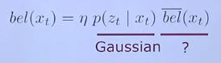

The Kalman Filter requires the world to be Gaussian, that is every probability distribution used must be Gaussian. This filter also assumes linear models.
Suppose your position on a 2D plane is given by the black dot:
Let's say you get your estimate as to where you are, inferred from a certain control command. For example if you are trying to move forward in the same direction you estimate your new position will be the cross:

This is will be the prediction step. Now suppose you get an observation about the distance to the nearest lighthouse:
So now we can perform our new state estimate by combining by the means of a weighted sum our prediction along with the measurement:

This weighted sum is performed trading off how certain you are about your prediction and how certain you are about your observation.
What does it mean when we say the Kalman Filter uses linear models? This means that both the motion model and the observation model can be expressed through a linear function, that is:
\[ f(x) = Ax + b \]One important property is that if a Gaussian distribution is transformed through a linear function it stays Gaussian.
Also, we introduce noise by using a zero mean Gaussian distribution.
The motion model is defined as follows:
\[ x_t = A_t x_{t-1} + B_tu_t + \epsilon_t \]Where \(x_{t-1}\) is the previous state estimate, \(u_t\) is the control command at time \(t\) and \(\epsilon_t\) is Gaussian noise. Let's dive a little deeper:
- \(A_t\) is a matrix \(n \times n\) (a mapping between the state space and the state space) which tells us how the state evolves from \(t-1\) to \(t\) without control commands or noise. We can use this matrix to encode information about velocity, acceleration, etc.
- \(B_t\) is a matrix \(n \times l\) (a mapping between the control space and the state space) that describes how the control command \(u_t\) changes the state from \(t_1\) to \(t\).
- \(\epsilon_t\) is a random variable that represents the motion noise with covariance \(R_t\).
The observation model is defined as follows:
\[ z_t = C_t x_t + \delta_t \]Where \(x_{t}\) is the space of state and \(\delta_t\) is Gaussian noise. Important: we use \(C_t\) to map from the space state to the observation space. Also:
- \(C_t\) is a matrix \(k \times n\) (a mapping between the state space and the observation space) that describes how to map the state \(x_t\) to an observation \(z_t\).
- \(\delta_t\) is a random variable that represents the observation noise with covariance \(Q_t\).
Now that we have defined our linear models, we are going to show how to express the motion under a Gaussian:
\[ p(x_t|x_{t-1}, u_t) = \det(2\pi R_t)^{-\frac{1}{2}} \exp(-\frac{1}{2}(x_t - A_tx_{t-1} - B_tu_t)^TR^{-1}_t(x_t - A_tx_{t-1} - B_tu_t)) \]Which means we are obtaining the value of a probability distribution that incorporates our linear model for the prediction:
\[ p(x_t|x_{t-1}, u_t) \sim \mathcal{N}(A_tx_{t-1} + B_tu_t, R_t) \]We will apply the same reasoning to obtain the observation model under a Gaussian:
\[ p(z_t|x_t) = \det(2\pi Q_t)^{-\frac{1}{2}} \exp(-\frac{1}{2}(z_t - C_tx_t)^TQ^{-1}_t(z_t - C_tx_t)) \]Which means we are obtaining the difference between the observation \(z_t\) and what I expect to observe \(x_{t}\) (\(z_t - Cx_t\)) while also taking the uncertainty into account \(Q_t^{-1}\). We compute this incorporating our linear model for the correction step:
\[ p(x_t|x_{t-1}, u_t) \sim \mathcal{N}(C_tx_t, Q_t) \]As we have said, we are assuming everything is Gaussian. Up until now we have described our models by using Gaussian distributions, however we still have to make sure these are maintained when we are performing the prediction and the update. So, given the belief at time \(t\):

If we suppose \(\hat{bel}(x_t)\) is Gaussian, then \(bel(x_t)\) is Gaussian because the product of Gaussian distribution is a Gaussian distribution. Therefore we need to show that \(\hat{bel}(x_t)\) is also Gaussian.